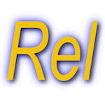

Gestion d'une ligue de footbal
Le but de ce projet est de comprendre, gerer et administrer une base de donner sur la gestions d'une ligue de football.
Compétance n°4 : Création d'une base de données
Ce projet est en lien avec la competance 4 du programme du BUT informatique : Concevoir, gérer, administrer et exploiter les données de l'entreprise et mettre à disposition toutes les informations pour un bon pilotage de l'entreprise
Les outils utiliser :
 Language UML (pour la traduction en diagrame)
Language UML (pour la traduction en diagrame) Visual Paradigm (pour faire les diagrames)
Visual Paradigm (pour faire les diagrames)- REL (pour faire la traduction en tutorial D)
 Google Docs (pour rediger des comptes rendus)
Google Docs (pour rediger des comptes rendus)
Les Etapes :
Ce projet est diviser en deux partie qui se complete. La premiere partie est l'analise des dependance fonctionnelle et la realisation d'un diagrame de classe. La deuxieme partie quand a elle est de creer le diagramme des contrainte d'integriter referencielle te la programmation en tutorial D de la base de donner.
Le serpent de taille fixe se déplace automatiquement vers la droite. L'utilisateur définit sa position initiale via les coordonnées (x, y). Le jeu commence ensuite avec un affichage dynamique dans le terminal.

Le serpent de taille fixe se déplace automatiquement vers la droite. L'utilisateur définit sa position initiale via les coordonnées (x, y). Le jeu commence ensuite avec un affichage dynamique dans le terminal.